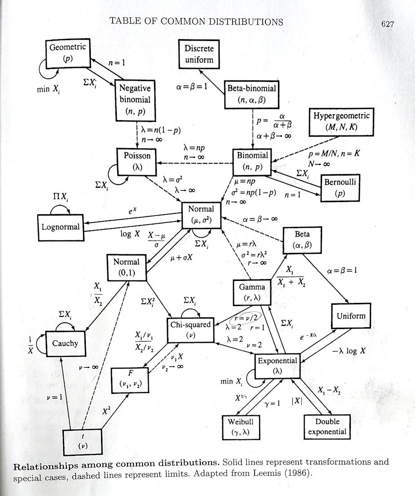
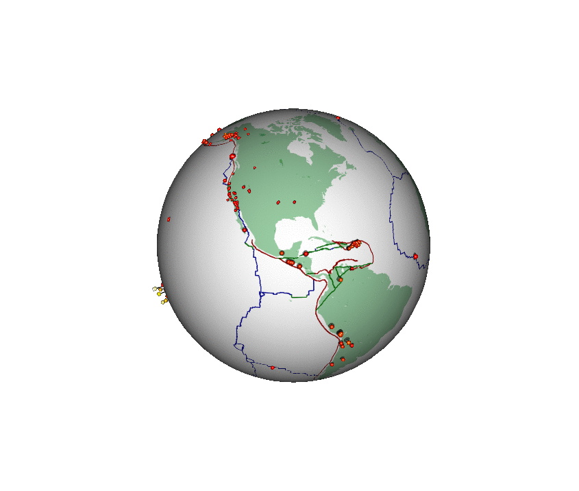
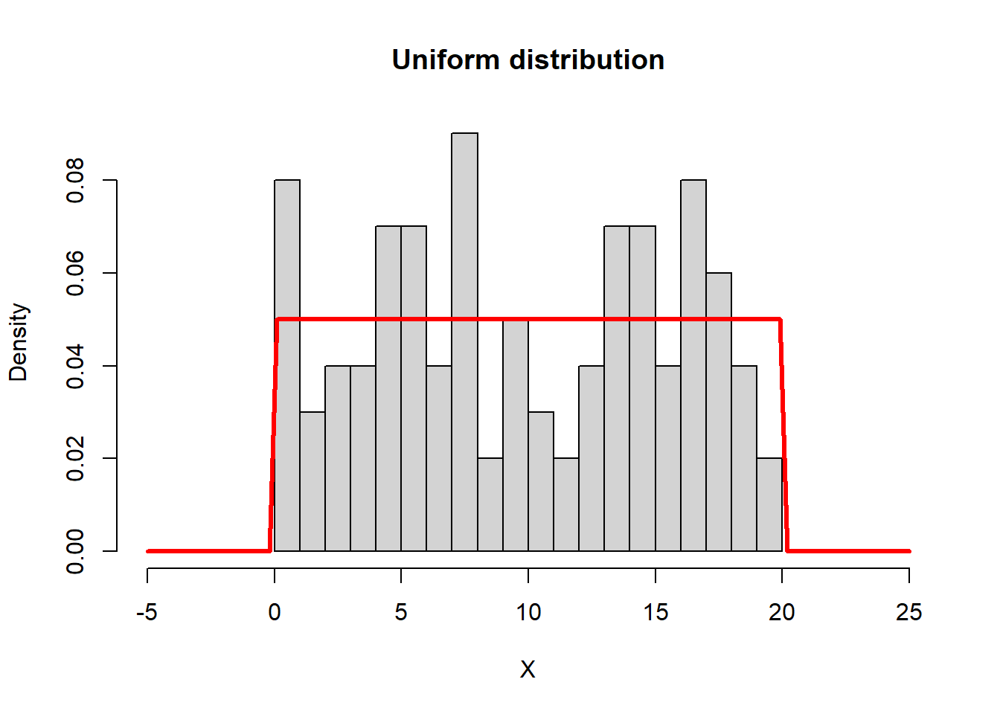
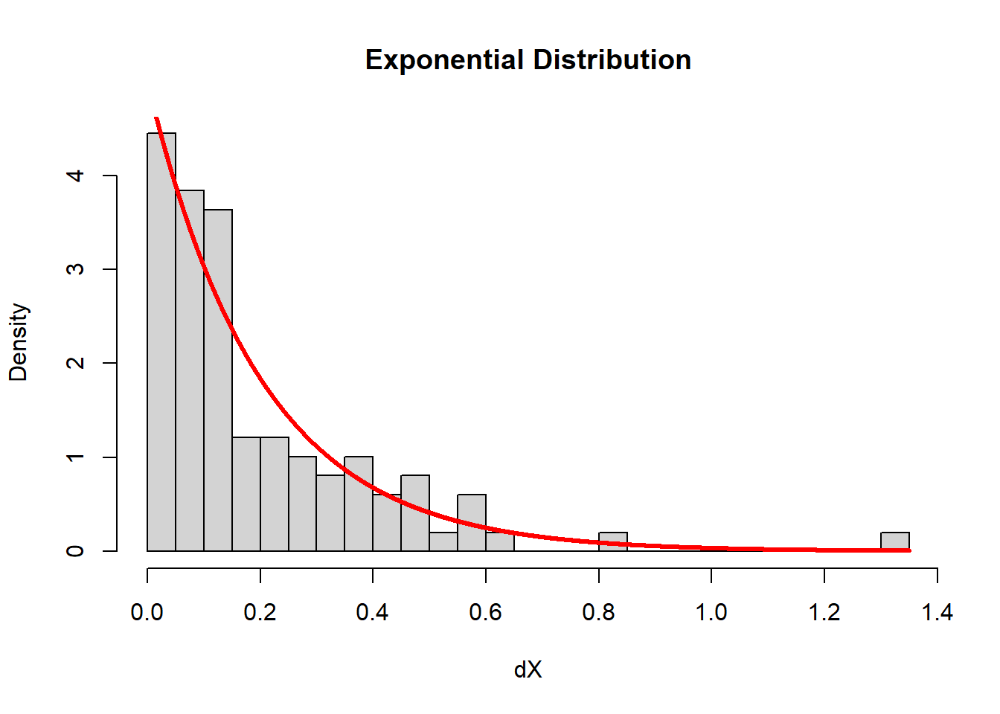
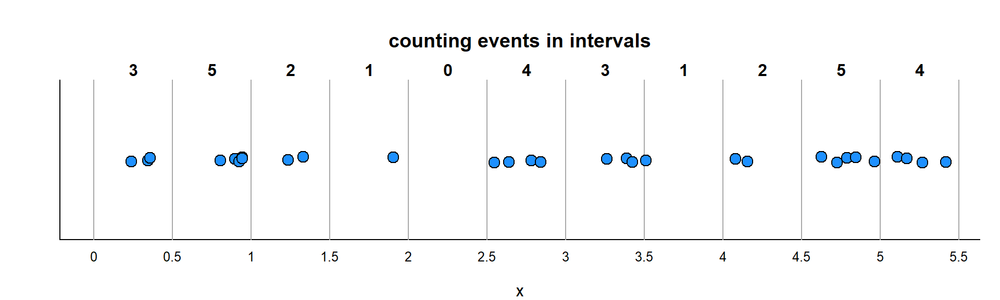
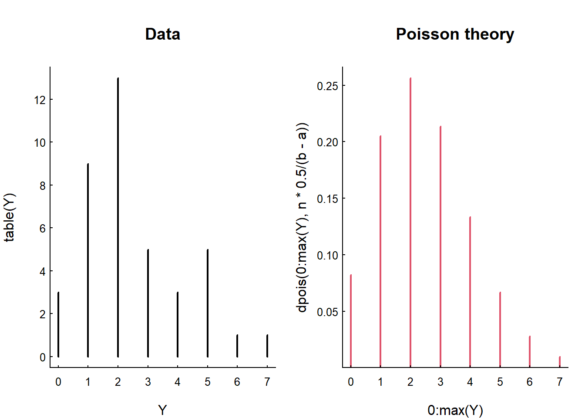
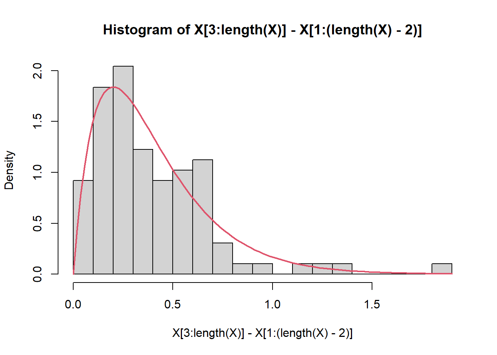
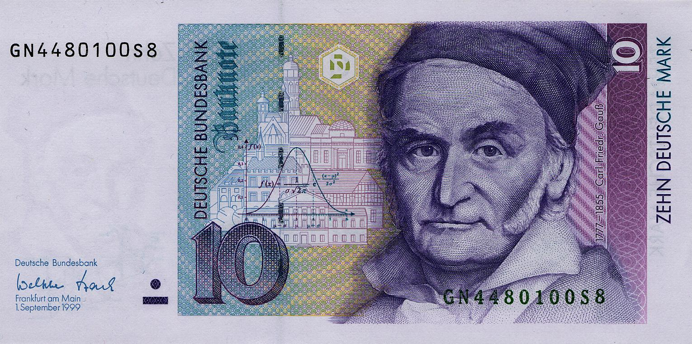

The Tale of One Process and Many Distributions
EFB 796: Practical Seminar in Quantitative Ecology
Elie Gurarie
2025-01-16
1 Background
In the book I learned statistical theory from, the infamous Casella and Berger, Statistical Inference, 2nd Edition there was an amazing schematic at the back that looks like this:

This figure maps how so many of the (common) distributions that we use so often in our models of complex processes1 are related. In fact, they even have a name: most (maybe not quite all) belong to the exponential family of distributions.
These relationships are mathematical. But they are models of natural phenomenon, and many are extremely useful. A way to obtain intuition for the actual relationships is by seeing how multiple distributions can be drawn from the same process. Recall that when we say process, we mean some complex and difficult to predict natural phenomenon. To model those processes statistically, we have to map them to some kind of numeric measure, and obtain data. It is those data that are described uniquely by different distributions.
The goals of this lab are to:
- gain familiarity with some of the basic (and, nice, elegant, fairly consistent) base functionality of R for working with random variables and distributions;
- illustrate how different distributions emerge from the same fundamental process.
2 The Process
The process is earthquakes. Specifically: All the earthquakes. On all the earth. They are occurring constantly, and are regularly updated at this website: https://earthquake.usgs.gov/earthquakes/feed/v1.0/csv.php. In fact, you can download the freshest data at any moment directly in R with the following command:
eq <- read.csv("https://earthquake.usgs.gov/earthquakes/feed/v1.0/summary/all_month.csv")Or (if you’re in the class and have access to the data) from your local computer:
eq <- read.csv("data/all_month.csv")2.1 Structure of the data
Relying on the most useful commands for getting a quick feel for data:
head(eq)## time latitude longitude depth mag magType nst gap
## 1 2025-01-16T13:46:51.640Z 38.79117 -122.7768 1.450 0.81 md 6 107
## 2 2025-01-16T13:39:36.437Z 61.62390 -150.9475 62.200 1.70 ml NA NA
## 3 2025-01-16T13:36:34.964Z 63.45080 -150.1503 106.200 2.00 ml NA NA
## 4 2025-01-16T13:34:07.320Z 35.90167 -117.7053 2.790 2.08 ml 33 41
## 5 2025-01-16T13:31:00.810Z 38.81367 -122.8168 0.580 0.56 md 8 95
## 6 2025-01-16T13:27:32.835Z -20.85900 169.2535 30.562 5.10 mb 44 88
## dmin rms net id updated
## 1 0.008893 0.02 nc nc75118021 2025-01-16T13:48:25.871Z
## 2 NA 0.27 ak ak025qokmi3 2025-01-16T13:41:01.440Z
## 3 NA 0.34 ak ak025qojz8o 2025-01-16T13:38:44.377Z
## 4 0.064170 0.22 ci ci40840911 2025-01-16T13:45:12.660Z
## 5 0.010770 0.03 nc nc75118011 2025-01-16T13:32:35.827Z
## 6 2.422000 1.06 us us6000pkeg 2025-01-16T13:45:40.040Z
## place type horizontalError depthError magError
## 1 2 km NW of The Geysers, CA earthquake 0.48 2.180 0.080
## 2 24 km WNW of Susitna, Alaska earthquake NA 0.700 NA
## 3 60 km W of Cantwell, Alaska earthquake NA 0.900 NA
## 4 18 km ESE of Little Lake, CA earthquake 0.26 0.480 0.212
## 5 7 km NW of The Geysers, CA earthquake 0.32 0.900 0.350
## 6 145 km S of Isangel, Vanuatu earthquake 7.74 5.567 0.055
## magNst status locationSource magSource
## 1 8 automatic nc nc
## 2 NA automatic ak ak
## 3 NA automatic ak ak
## 4 25 automatic ci ci
## 5 11 automatic nc nc
## 6 105 reviewed us usWhoa! Lots of columns. Here’s more detail, that is sometimes more readable:
str(eq)## 'data.frame': 9047 obs. of 22 variables:
## $ time : chr "2025-01-16T13:46:51.640Z" "2025-01-16T13:39:36.437Z" "2025-01-16T13:36:34.964Z" "2025-01-16T13:34:07.320Z" ...
## $ latitude : num 38.8 61.6 63.5 35.9 38.8 ...
## $ longitude : num -123 -151 -150 -118 -123 ...
## $ depth : num 1.45 62.2 106.2 2.79 0.58 ...
## $ mag : num 0.81 1.7 2 2.08 0.56 5.1 1.33 1.04 1.84 1.9 ...
## $ magType : chr "md" "ml" "ml" "ml" ...
## $ nst : int 6 NA NA 33 8 44 26 19 31 NA ...
## $ gap : num 107 NA NA 41 95 88 47 92 59 NA ...
## $ dmin : num 0.00889 NA NA 0.06417 0.01077 ...
## $ rms : num 0.02 0.27 0.34 0.22 0.03 1.06 0.15 0.02 0.23 0.48 ...
## $ net : chr "nc" "ak" "ak" "ci" ...
## $ id : chr "nc75118021" "ak025qokmi3" "ak025qojz8o" "ci40840911" ...
## $ updated : chr "2025-01-16T13:48:25.871Z" "2025-01-16T13:41:01.440Z" "2025-01-16T13:38:44.377Z" "2025-01-16T13:45:12.660Z" ...
## $ place : chr "2 km NW of The Geysers, CA" "24 km WNW of Susitna, Alaska" "60 km W of Cantwell, Alaska" "18 km ESE of Little Lake, CA" ...
## $ type : chr "earthquake" "earthquake" "earthquake" "earthquake" ...
## $ horizontalError: num 0.48 NA NA 0.26 0.32 7.74 0.17 0.23 0.24 NA ...
## $ depthError : num 2.18 0.7 0.9 0.48 0.9 ...
## $ magError : num 0.08 NA NA 0.212 0.35 0.055 0.172 0.17 0.213 NA ...
## $ magNst : int 8 NA NA 25 11 105 24 20 26 NA ...
## $ status : chr "automatic" "automatic" "automatic" "automatic" ...
## $ locationSource : chr "nc" "ak" "ak" "ci" ...
## $ magSource : chr "nc" "ak" "ak" "ci" ...Basically, locations, times, and lots of detail about lots of earthquakes.
2.2 Mapping the data
Here’s a quick global map, where the size of the circles are
proportional to the magnitude. Note you’ll need to install the
mapdata package to draw this map … this is on of very
few external packages we need to install, as the base R functions
are really terrific at exploring and manipulations random variables.
require(mapdata)
map("world", fill=TRUE, col="lightgreen", bor=NA, asp=1)
points(eq$longitude, eq$latitude, pch=19, col=rgb(0,0,0,.5), cex=eq$mag/5)
Here’s a different (and highly non-trivial, but much more honest) visualization of the bigger earthquakes. This was also created in R:

2.3 Some data processing
For this lab, we’re only interested in the time of the earthquakes,
so we need to obtain those and - installing another package
lubridate (the most convenient tool in my opinion for
formatting times and dates):
require(lubridate)
eq$time <- ymd_hms(eq$time)Quick data questions: What is the time range of these data? How many earthquakes were there in that time period? These two numbers are ALL you need to obtain ALL of the remaining results in this lab!
3 Where the Distributions are Hiding
3.1 1. Uniform Distribution
An earthquake on earth can happen any time with no patterns. The model for that is the uniform distribution, which has the following properties:
- \(X \sim \text{Uniform}(\alpha, \beta)\)
- parameters: \(\alpha\) - minimum, \(\beta\) - maximum
- pdf: \(f(x) = {1 \over \beta-\alpha}; \,\, \text{where} \,\, x \geq \alpha \,\, \text{or} \,\, x \leq \beta; 0 \,\,\text{else}\)
- mean: \(E(X) = (\alpha + \beta)/2\)
- variance: \(Var(X) = {1\over 12}(\beta - \alpha)^2\)
- R functions:
runif(n, min, max), dunif(x, min, max), punif(x, min max)
Those R functions are the random generations (always
r before the distribution name), the probabiliy density
/ mass function (d before the name), and the
cumulative density / mass function (p before the
name).
Below, we simulate 100 random draws from a Uniform(0,20)
distribution, and add a curve() to show the distribution
function. Note the use of runif to generate the random
numbers, and the use of dunif to draw the distribution
function. We’ll follow that template going forward:
a <- 0; b <- 20
n <- 100
X <- runif(n, a, b)
hist(X, breaks = 20, xlim = c(-5,25), freq = FALSE, main = "Uniform distribution")
curve(dunif(x, a, b), add = TRUE, col = "red", lwd = 3)
Exercise:
- 1a. What model do you proposed for the distribution of the earthquake times? i.e. - what are \(\alpha\) and \(\beta\)?
- 1b. What is the sample mean and variance of the actual earthquake times? (use the
mean()andvar()function).
- 1c. What is the theoretical mean of the earthquake times? Does it conform with the model?
- 1d. Are those means or variances at all interesting?
3.2 2. Exponential Distribution
Here’s a, perhaps, unexpected and profound relationship: the interval between observations in an uniform random continuous process. In other words, the waiting time between a completely unpredictable process is distributed exponentially. The exponentisl distribution has the following properties:
- \(X \sim \text{Exponential}(\lambda)\)
- parameter: \(\lambda\) - rate, (sometimes - often preferred by me - \(\tau = 1/\lambda\) - mean)
- pdf: \(f(x) = \lambda e^{-\lambda x},
\quad x \geq 0\)
- mean: \(E(X) =
\frac{1}{\lambda}\)
- variance: \(\text{Var}(X) =
\frac{1}{\lambda^2}\)
- R functions:
rexp,dexp,pexp
The parameter \(\lambda\) is a rate, it has units of 1/units of the observations. The rate, in this case, is the number of observations divided by the interval. Here’s an illustration.
Note that I take the original random sample of uniform random
numbers, sort them (very important) and then take the
difference. Key functions here are sort() and
diff(). The hist() function draws a histogram.
Note that the freq = FALSE (or, equivalently
prob = TRUE) makes the histogram produce not
frequencies (i.e. counts per bin), but densities, such
that the area sums to 1. How did I compute the rate?
# sort X
X <- sort(X)
# find intervals
dX <- diff(X)
hist(dX, breaks = 20, freq = FALSE, main = "Exponential Distribution")
curve(dexp(x, rate = n/(b-a)), add = TRUE, col = "red", lwd = 3, n = 1e4)
Exercise:
2a. Obtain and illustrate (via histogram) the distribution of earthquake intervals.
2b. What is a proposed probabilistic model for the distribution of the interval between earthquake times? 2c. What is the variance and mean of the interval between earthquake times? Do these conform with your model?
3.3 3. Poisson Distribution
The Poisson distribution counts things that are completey randomly distributed, when they have the same probability of occurring in a given interval. So if you break your random uniform distribution interval, you’ll get Poisson distributed variable. The distribution has the following properties:
- \(X \sim \text{Poisson}(\lambda)\)
- parameter: \(\lambda\) - called intensity
- pmf: \(f(k) = Pr(X = k) = \frac{\lambda^k e^{-\lambda}}{k!}, \quad k = 0, 1, 2, \ldots\)
- Mean: \(E(X) = \lambda\)
- Variance: \(\text{Var}(X) = \lambda\)
The Poisson distribution is very special in that the mean and the
variance are equal to each other, and both equal to \(\lambda\). There is an important two stage
trick here to do the binning, which relies on two useful and
underappreciated functions: cut() (and seq())
for binning, and table() for counting.
First, see how seq() - which makes sequences -
works:
seq(1,6,.5)## [1] 1.0 1.5 2.0 2.5 3.0 3.5 4.0 4.5 5.0 5.5 6.0The cut() function takes all the numeric values, and
bins them, turning them into factors for example
cut(1:20, breaks = c(0,20,5))## [1] (0,5] (0,5] (0,5] (0,5] (0,5] (5,20] (5,20] (5,20] (5,20] (5,20]
## [11] (5,20] (5,20] (5,20] (5,20] (5,20] (5,20] (5,20] (5,20] (5,20] (5,20]
## Levels: (0,5] (5,20]The table() function counts the elements in those
bins:
table(cut(1:20, breaks = seq(0,20,5)))##
## (0,5] (5,10] (10,15] (15,20]
## 5 5 5 5In this case, there’s always exactly 5 elements per bin. But what
we’re really interested in is the distribution of those counts.
So we need to run table() again:
table(table(cut(1:20, breaks = seq(0,20,5))))##
## 5
## 4This is an extremely boring table. Is says that there are 4 counts of
5. If you want proportions, you can do something really ugly and wrap
this whole thing in a prop.table() function:
prop.table(table(table(cut(1:20, breaks = seq(0,20,5)))))##
## 5
## 1This gives you the frequency counts. All of them are “5”.
With the random process, the numbers will be more interesting. Below, I illustrate the distribution of events that occur over every single unit of \(x\) (think - Time). We took the events and binned them, and the bins have different numbers of events:

Here is this analysis performed on the simulated Unif(0,20) data, where the question is: how are the counts in intervals of size 1/2 distributed?
X.cut <- cut(X, seq(a, b, .5))
Y <- table(X.cut)
plot(table(Y), type = "h", main = "Data")
plot(0:max(Y), dpois(0:max(Y), n*.5/(b-a)),
type = "h", col = 2, lwd = 2, main = "Poisson theory")
These are discrete distributions - not continuous. So we use
plot(type = "h") to draw the mass. Note the characteristic
shape … a good number of those intervals (over 30%) have only 1 event,
and a good number (10%) have 0. But it does get all the way up to 5
events in that interval.
Note that the variance and the mean of the data are close, as predicted by the Poisson distribution:
var(Y); mean(Y)## [1] 2.923077## [1] 2.5and that the mean is, in fact, exactly equal to the theoretical intensity \(\lambda\)
n/(b-a) * 0.5## [1] 2.5How did I know what the rate is supposed to be? And why are the sample mean and \(\lambda\) identical?
Exercise:
3a. Count the number of earthquakes that occur every half hour. Plot and See if their distribution is roughly Poisson.
3b. Do the theoretical mean and variance conform with your predictions?
3.4 4. Gamma Distribution
As a bonus, if \(X\) and \(Y\) are (independent) Exponential(\(\lambda\)), their sum is Gamma(\(\lambda, 2\)). This is a nice handsome distribution that is humped and unimodal and left-skewed.
The \(X \sim \text{Gamma}(\lambda, \kappa)\) distribution has the following properties:
- parameters: \(\kappa\) - shape and \(\lambda\) - rate
- pdf: \(f(x) =
\frac{\lambda^\kappa}{\Gamma(\kappa)} x^{\kappa - 1} e^{-\lambda x},
\quad x \geq 0\) where \(\Gamma(\kappa)\) is the Gamma
function.
- mean: \(E(X) = {\lambda \over
\kappa}\)
- variance: \(\text{Var}(X) = {\lambda \over
\kappa^2}\)
- R function:
dgamma(x, shape, rate),pgamma(),rgamma()
hist(X[3:length(X)] - X[1:(length(X)-2)], breaks = 15, freq = FALSE)
curve(dgamma(x, 2, n/(b-a)), add = TRUE, col = 2, lwd = 2, xpd = NA)
3.5 5. Normal Distribution
There’s a reason the Normal / Gaussian distribution is in the center of everything.
Everything becomes normal. Specifically, the sum of identical independent random variables … NO MATTER THE DISTRIBUTION … approximates the normal distribution. This is the all powerful central limit theorem. We’ll discuss this later.
But here she is:
- \(X \sim {\cal N}(\mu, \sigma)\)
- parameters: \(\mu\), \(\sigma\)
- pdf: \(f(x) =
\frac{1}{\sqrt{2\pi\sigma^2}}
\exp\left(-\frac{(x-\mu)^2}{2\sigma^2}\right)\) where \(-\infty < x < \infty\).
- mean: \(E(X) = \mu\)
- variance \(\text{Var}(X) =
\sigma^2\)
- R functions:
dnorm,pnorm,rnorm
And here’s an illustration of that distribution:

4 In summary
| Distribution | Models | relationship |
|---|---|---|
| \(X\sim \text{Unif}(\alpha,\beta)\) | Completely random events occurring at any time | \(X\) |
| \(Y\sim \text{Exp}(\lambda)\) | Interval between those events: | \(Y_i = |X|_{i} - |X|_{i-1}\) |
| \(Y\sim \text{Gamma}(\lambda, \kappa)\) | Interval between any \(\kappa\) of those events | \(Y_i = |X|_{i+2} - |X|_i\) |
| \(\text{Poisson}(\lambda)\) | Count of events in a given interval | |
| \(\text{Normal}(\mu, \sigma)\) | Sum of any of these random variables (if independent) |
Lest there’s any doubt, there is no science as complex as ecological science.↩︎